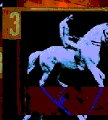

- text -
|  |
.neing God N Ange-Lz_ aims to explore the nature of contemporary cloning technology through parodying quasi-religious animations. The work progresses through a series of animations and text that highlight the absurdities that cloning technology may produce, including the act of trying to clone "god". wurked avatar who since 1995 has exhibited extensively in a net. . |
clusion r only a very small portion of a large body of online net. reflecting formal programming language without being one. For the reader of mez's "netwurks", it remains all the more an open question whether the "mezangelle" para-code of parentheses and wildcard characters only mimics programming languages or is, at least partially, the product of programmed text filtering. Many thx go 2 reiner strasser 4 hosting the work on the workxspace site. .
|
clusion r only a very small portion of a large body of online net. reflecting formal programming language without being one. For the reader of mez's "netwurks", it remains all the more an open question whether the "mezangelle" para-code of parentheses and wildcard characters only mimics programming languages or is, at least partially, the product of programmed text filtering. Many thx go 2 reiner strasser 4 hosting the work on the workxspace site. . |
|
Employer response to the COOP program is essential for maintaining a successful operation. . Coop Education Experience Text Page Nebraska Department of Education Work Based Learning Cooperative Education Experience - Steps for Getting Started Getting Started Step 1. If they have employed cooperative education students in the past. How long the company has been in existence in the community. |
also look at: http://www.uiowa.edu/~iareview/tirweb/hypermedia/mez/selectext/index.htm